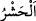
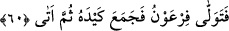
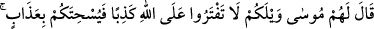
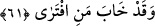

geçen İsa (a.s.)’ın kavminin bayramıdır. Dördüncü ve beşincisi, Medine halkının
Câhiliyye dönemindeki bayramlarıdır. Onlar yılda iki gündür. Allah Teâlâ, İslam
gelince bu iki bayramı Kurban ve Ramazan bayramları ile değiştirmiştir. Kıyamet
gününe kadar bu bayramlar devam edecektir.
Molla Câmî der ki:
Senin cefan kılıcıyla kurban olmak bizim bayramımızdır
Böyle bayram için can veririz ömürlerdir
Buradaki “
” kelimesi, insanları meskûn oldukları yerden çıkarmak ve onları harp
ve benzerlerine zorlamak demektir. Bu kelime sâdece topluluk için kullanılır.
İnsanların kuşluk vakti toplanması, şüpheden daha uzak olması içindir. Dırâmus-
sıkt’ta der ki: “(Arapça’da) günün başlangıcı fecrdir. Sonra sabah, sonra gadât, sonra
bükra, sonra duhâ (kuşluk) sonra dahve (kaba kuşluk), sonra hecîra, sonra zahîra, sonra
ravâh, sonra asr, sonra asîl, sonra mesâ, sonra aşâ-i evvel (ilk yatsı), sonra şafağın
kaybolmasıyla da aşâ-i ahîra gelir.”
Bahru’l-ulûm’da şöyle der: “Duhâ, güneşin yükselip ışıklarını yaymaya başladığı,
gündüzün ilk saatleridir.” İmâm Ragıb ise şöyle der: “Duhâ, günün yayılıp uzamasıdır.
Vakit onunla isimlendirilmiştir.” Kâşifî der ki: “Duhâ, gündüzün geri kalanından daha
aydınlık olan sabah vaktidir.”
60. Bunun üzerine Fir’avn dönüp gitti. Hilesini (sihirbazlarını) topladı; sonra geri
geldi.
“Bunun üzerine Fir’avn dönüp gitti.” Mûsâ’yı bırakıp ondan uzaklaştı, diğer
şehirlerden sihirbazları toplamak için meclisten ayrıldı. “Hilesini” kendileriyle hile
yapacağı sihirbazları ve onların âletlerini “topladı; sonra” buluşma yerine topladığı
hile ile birlikte “geri geldi.”
“Sonra” kelimesi, Fir’avn’un buluşma yerine gelmek için acele etmediğine bilakis bir
müddet sonra geldiğine işâret vardır.
61. Mûsâ onlara: “Yazık size! Allah hakkında yalan uydurmayın! Sonra O, bir